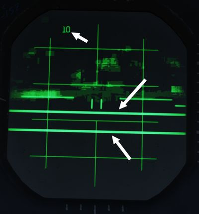
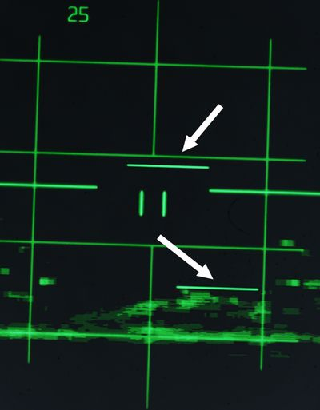

Identification Systems
The aircraft is equipped with a set of interrogator systems AN/APX-76, -80A and -81A, as well as with a transponder to react to interrogations from other aircraft.
The interrogator can be controlled by the WSO with a panel on the left sub-panel. The transponder is set up by the pilot on the right console.
Transponder System

The transponder automatically responds to challenges from surface or airborne radar sets and serves supplementary purposes such as providing momentary identification of position upon request and transmitting a specially coded response to indicate an emergency.
The system operates by receiving coded interrogation signals and transmitting coded response signals to the source of the challenge, with a proper reply indicating the target is friendly.
The system features four modes. Mode 1, Mode 2, and Mode 3/A—are provided for security identification, personal identification, and traffic identification, respectively.
Mode 4 is controlled through the interrogator panel by the WSO. Codes for Modes 1 and 3/A can be set in the cockpit, while the code for Mode 2 must be set on the ground, ranging from 0000 to 7777.
💡 Due to engine limitations, the settings on the panel have no effect for DCS. However, they are exposed to external tools, such as SRS.
Self Test operation
To self test Modes 2 and 3/A, place the master switch (
Mode 1 and Mode C do not have self testing capabilities.
Normal Operation
To operate the IFF system, start by rotating the master switch (
Set the Mode 1, Mode 2, Mode 3/A, Mode 4, and Mode C switches (
Interrogation of Position
For Interrogation of Position (I/P) switch operation, place the I/P switch
(
If the IFF warning light and MASTER CAUTION light come on momentarily, check the
Mode 4 selector switch (
Normal IFF operation will be available, after an 80-second warm-up, when the
master switch (
Emergency Operation
Upon ejection from either cockpit, the IFF emergency operation automatically becomes active.
If the master switch (
In an emergency, rotate the master switch (
Interrogator Systems

The Phantom combines three systems, AN/APX-76, -80A and -81A, for interrogating and challenging other aircraft to detect whether they are friend or foe.
The AN/APX-76 system enables regular interrogation with friendly transponder systems.
Further, the US reverse-engineered some Soviet transponder systems actively used between 1960 and 1980 enough to be able to develop the spoofing system AN/APX-81A Combat-Tree. Combat-Tree sends compatible interrogation requests to Soviet systems which they would identify as friendly systems, hence sending back a valid response. This allows the Phantom to not only identify friendly systems, but also some likely-hostile aircraft.
💡 Soviets quickly realized the problem and patched their IFF transponder systems, while also encrypting the communication to prevent another breach.
Controls are combined on a panel, accessible to the WSO on the left sub-panel area.
The upper half consists of controls for the AN/APX-76 system, while the lower half controls the AN/APX-81A.
AN/APX-76
To challenge friendly or civilian aircraft using the AN/APX-76, the WSO sets the
interrogation mode on the first roller-display. It can be set to either OFF, or
Mode 1, 2, 3, 4/A or 4/B (
💡 In DCS, only Mode 4 (either A or B) is effective and can be used for interrogation using the AN/APX-76.
The other four digits are used to set the IFF code to interrogate for Modes 1 to
3 (
Once setup, interrogation can be initiated by either pressing the Challenge
Button on the Antenna Hand Control Stick or moving the Test/Challenge Switch
(
💡 The Test/Challenge switch will only send a challenge via the AN/APX-76 system, while the Challenge Button includes an interrogation by Combat-Tree, if activated.

The radar screen presents the results of the interrogation with lines around the contacts position:
- line above; the aircraft has a matching transponder mode
- line below; the aircraft has a matching transponder code
💡 In DCS, a line above and below the contact means it is friendly. A single line represents a neutral, e.g. civilian, aircraft.

Each time the AN/APX-76 is sending an interrogation, the challenge light
(
Test
The interrogation system can be tested by holding the Test/Challenge Switch
(
During the test, the system will inject two artificial transponder responses at ranges 3.5 NM and 4.5 NM.
The test is successful if the challenge lamp (

AN/APX-81A Combat-Tree
Combat-Tree is designed to spoof hostile IFF transponders by sending interrogation requests compatible with these systems. The hostile transponder will then send back a response, revealing the position of the aircraft.
💡 Spoofable systems that can be exploited by the AN/APX-81A can be configured in the Mission Editor.
The system is activated by moving both, the Mode 2 and Mode 3 switch
(
Once setup, interrogation can be initiated by pressing the Challenge Button on the Antenna Hand Control Stick.
💡 If AN/APX-76 is setup, pressing the Challenge Button will also send an interrogation request by AN/APX-76.
Responses to a spoofed request are indicated by a single line below the contact.

💡 The indication is almost identical to responses to an AN/APX-76 interrogation with only a matching transponder mode, but different code. To differentiate to which challenge the response belongs, it is necessary to either deactivate one interrogation system, or to send a AN/APX-76-only challenge by using the Test/Challenge Switch (
2 ) in the CHAL CODE position and compare results.
Each time the AN/APX-81A is sending an interrogation, the TEST/CHAL light
(
Activity Lights

Right next to either AoA Indexer in the WSO cockpit is a light that indicates activity detected by the APX-81A Combat Tree system.
Illuminated each time the system detects IFF responses by hostile aircraft.
💡 Due to engine limitations, the activity lights only illuminate if a transponder responds to a Combat-Tree challenge send by the own aircraft.
Self-Test
The Test button (
The test is successful if the TEST/CHAL lamp (